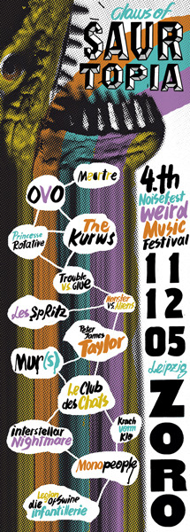
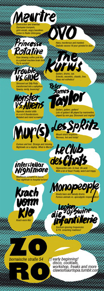

CLAWS OF SAURTOPIA _ NOISE FEST IV
11.-12.05.2012 | ZORO | Leipzig  
freitag 11.05.2012
Princesse Rotative (F)
Fuse blowing coffee junk kids in a pinball machine brain fuck. Try
to survive!
http://www.myspace.com/princesserotative
http://princesserotative.blogspot.de/
Interstellar Nightmare (D)
Madhouse screams of horror. Your nighttrain to hospital
torture!
http://www.myspace.com/interstellarnightmare
http://soundcloud.com/interstellar-nightmare
Trouble Vs Glue (I)
Stressed out Silly Putty transformed into a xylophon. Spazzy, nerdy,
bouncing!
http://www.myspace.com/troublevsglue
Meurtre (F)
Destruction and downfall. Dystopian trumpets, grim vocals, angry basslines.
Listen to Radio Untergang!
http://meurtrefuckspace.blogspot.com/
Monopeople (D)
Gnarly bass and sweaty drums. Furious animals vs. apocalyptic moped
riders!
http://soundcloud.com/monopeople
https://www.facebook.com/monopeople
Les
Spritz (I)
Mount etna’s eruptions. Nervous, hot and tricky!
http://www.myspace.com/lesspritz
http://lesspritzzoid.bandcamp.com/
https://www.facebook.com/lesspritz
Krach Vorm Klo (D)
krach vorm klo!
+ AFTERSHOW-DISCO with
capt'no'future & futschikato (D/LE)
samstag 12.05.2012
Die Infantillerie / Legion Of Swine (D/UK)
Eardrum ignoring frequencies & P.A.
smashing madness!
http://legionofswine.blogspot.de
http://soundcloud.com/legionofswine
Ovo (I)
Hairy, murderous and masked. Diabolic excess ‘til your grinded to dust.
http://ovolive.blogspot.it/
http://www.myspace.com/ovobarlamuerte
http://ovomusic.bandcamp.com/
https://www.facebook.com/pages/OvO/199733020041914
Le Club Des Chats (F)
Hyperactive cats. In heat. On acid. With a lot of fleas! Freaky,
weird and trippy.
http://www.myspace.com/leclubdeschats
Monster Vs Aliens (D)
Hypnotic dentist drills in a sci-fi thunderstorm. Mutated and mind
screwing!
http://www.myspace.com/monstervsaliens
The Kurws (PL)
Guitars, drums, sax. Eclectic, excentric, chaotic, free. Ideas not
esthetics!
http://www.myspace.com/thekurws
http://kurws.bandcamp.com/
Mur(s) (F)
Curious and lost. Strange and missing. Nightowls on a daytrip. What is
Mur(s)?
http://www.lunerouge.org/textures/wall/LRwall0012.jpg
{kind=link}
Peter James Taylor (UK)
Guitars, guitars, guitars! Lots of guitars! All played by
marionettes, played by one guy. Dissonant and mighty!
http://peterjamestaylor.net
+
AFTERSHOW-DISCO with THE GOLDEN SCHMUCKS (D/EF)
poster & flyer
design by http://fuzzzgun.blogspot.de/ thx!!!